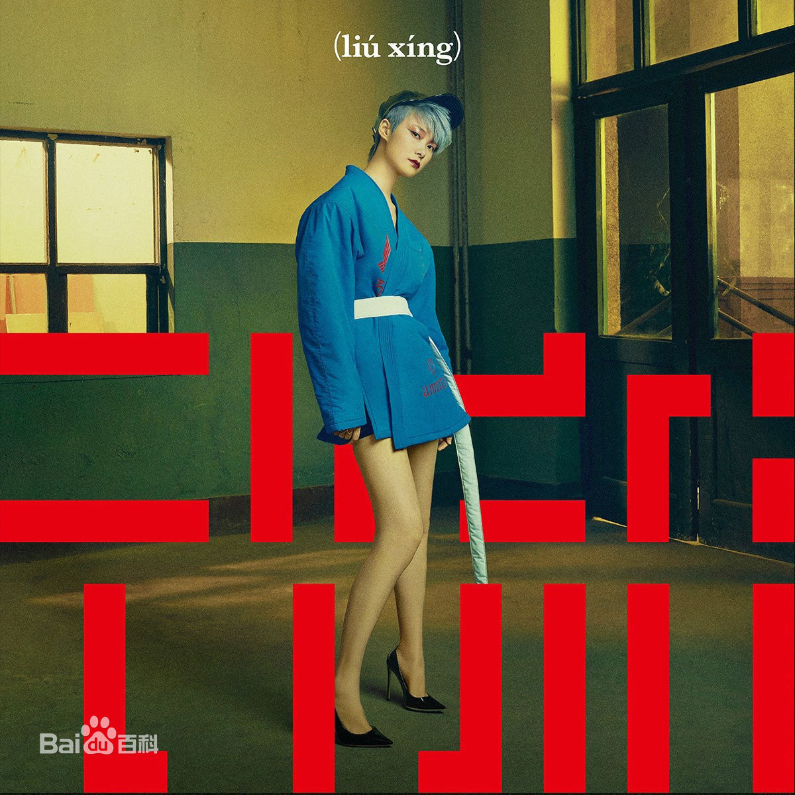

-
流行
|  |
「认识你自己，但有限」，德尔斐箴言如是说。作为人类童年时期天真而深邃的内向思索，它被披上了神谕的外衣，在随后 2700 年间，以各种面目闪烁于文化淹润寥廓的波澜长河。我们身处的年代，我们安置的欲望，我们消费的流行，就在其间无声而起，无形而散。你将如何全情而入，拥抱这稍纵即逝的电光石火？又将如何全身而退，审读这沸反盈天的狼奔豕突？你爱流行。你恨流行。你在流行。你就是流行。符号与产物，本体和化身，在经年累月的淬炼中，模糊了边界；我们浑然天成的人生，因此刻上了复杂的纹路。然而，个体终将收获来自流行的馈赠。它用瞬息万变的脸孔，授以火眼金睛的技巧；它用喧哗骚动的姿态，训教分辨真伪的眼界。吞噬，创生，尔后归于人的完整。洞若观火，明察秋毫，时代流行种种，不动声色，一一吸纳。2017 李宇春全新创作专辑《流行》，倾囊而出。如同手握一支从容的判笔，将风的轨迹尽数记录。时代从未要求谁，耐心描绘每一朵焰火于夜空消散的过程。但既然年轻气盛，必定温顺尚早。认识你自己，但有限；认识流行，时机正好。 |
歌曲列表 |
| 流行 | ||
| Privacy | ||
| 焰火 | ||
| 耳机 | ||
| 口音 | ||
| 今天雨，可是我们在一起 | ||
| Shake It | ||
| A Pop Song | ||
| 年轻气盛 | ||
| 一趟 |